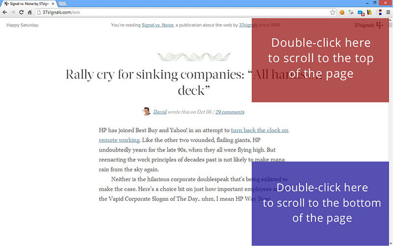

Click here for a demonstration of the functionality. Please note, that Fast Page Scroll doesn't work by default on the Chrome webstore, or in this help page, because of browser restrictions.
How to use Fast Page Scroll
Double click on the top right corner (roughly at a third) of the page to quickly scroll up to the top. Double click on the bottom right corner to scroll down. On pages with infinite scrolling (like Facebook, Twitter, Pinterest etc.) keep double clicking at the bottom to load more and more content.
This extension does not add any icons to your browser. Go to Chrome Options - Tools - Extensions menu and find Fast Page Scroll. You can see there some statistics of usage and you can add exceptions for sites, for which you don't want to use the extension.
Permissions
This extension will access the websites that you visit in order to append the scroll event, when you double-click on the predefined areas. It also requires access to open a new tab with usage instructions, only once, after your first installation. No other actions are performed, nor impacted by this extension.
Changelog
v0.11
- Added translation for some other major languages
(The translation has been made using Google Translate service. Please contact me if you would like to volunteer for a better translation.)
v0.10
- Added translation for Japanese, Chinese, German, French and Spanish
(The translation has been made using Google Translate service. Please contact me if you would like to volunteer for a better translation.)
v0.9
- Added translation for Russian and Italian languages
Feedback & Credits
If you like this extension, please consider rating it on the Chrome webstore, or share it with others on Facebook, Twitter or Google+.
Extension developed by @xhevi, xhevi.com. Drop me an e-mail if you find a bug, or just to let me know, what you think. Original idea for 'double-click to scroll' gesture by @37signals, basecamp.com.